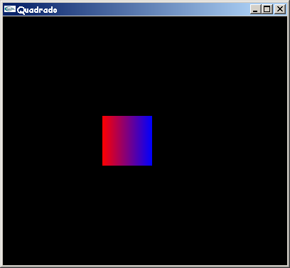

|
Introdução à OpenGL Professora Isabel Harb Manssour |
|
08. Desenhando PrimitivasO exemplo de programa OpenGL do capítulo anterior apenas abria uma janela vazia com um fundo azul. Neste capítulo é apresentado um exemplo que mostra como fazer um desenho, mover e redimensionar a janela [Wright 2000]. // Quadrado.c - Isabel H. Manssour
// Um programa OpenGL simples que desenha um
// quadrado em uma janela GLUT.
// Este código está baseado no GLRect.c, exemplo
// disponível no livro "OpenGL SuperBible",
// 2nd Edition, de Richard S. e Wright Jr.
#include <windows.h>
#include <gl/glut.h>
// Função callback chamada para fazer o desenho
void Desenha(void)
{
glMatrixMode(GL_MODELVIEW);
glLoadIdentity();
// Limpa a janela de visualização com a cor de fundo especificada
glClear(GL_COLOR_BUFFER_BIT);
// Especifica que a cor corrente é vermelha
// R G B
glColor3f(1.0f, 0.0f, 0.0f);
// Desenha um quadrado preenchido com a cor corrente
glBegin(GL_QUADS);
glVertex2i(100,150);
glVertex2i(100,100);
// Especifica que a cor corrente é azul
glColor3f(0.0f, 0.0f, 1.0f);
glVertex2i(150,100);
glVertex2i(150,150);
glEnd();
// Executa os comandos OpenGL
glFlush();
}
// Inicializa parâmetros de rendering
void Inicializa (void)
{
// Define a cor de fundo da janela de visualização como preta
glClearColor(0.0f, 0.0f, 0.0f, 1.0f);
}
// Função callback chamada quando o tamanho da janela é alterado
void AlteraTamanhoJanela(GLsizei w, GLsizei h)
{
// Evita a divisao por zero
if(h == 0) h = 1;
// Especifica as dimensões da Viewport
glViewport(0, 0, w, h);
// Inicializa o sistema de coordenadas
glMatrixMode(GL_PROJECTION);
glLoadIdentity();
// Estabelece a janela de seleção (left, right, bottom, top)
if (w <= h)
gluOrtho2D (0.0f, 250.0f, 0.0f, 250.0f*h/w);
else
gluOrtho2D (0.0f, 250.0f*w/h, 0.0f, 250.0f);
}
// Programa Principal
int main(void)
{
glutInitDisplayMode(GLUT_SINGLE | GLUT_RGB);
glutInitWindowSize(400,350);
glutInitWindowPosition(10,10);
glutCreateWindow("Quadrado");
glutDisplayFunc(Desenha);
glutReshapeFunc(AlteraTamanhoJanela);
Inicializa();
glutMainLoop();
}
Obs.: Clique aqui para fazer o download deste programa. Este programa, como mostra a figura 8.1, apenas exibe um quadrado azul e vermelho numa janela com fundo preto. As novas funções utilizadas neste exemplo são descritas a seguir.  Figura 8.1 - Saída do programa Quadrado.c
Antes de descrever os parâmetros e comandos da função “AlteraTamanhoJanela”, é necessário revisar alguns conceitos e especificações. Em quase todos ambientes de janelas, o usuário pode alterar o tamanho e dimensões da janela em qualquer momento. Quando isto ocorre, o conteúdo da janela é redesenhado levando em conta as novas dimensões. Normalmente, o esperado é que a escala do desenho seja alterada de maneira que ele fique dentro da janela, independente do tamanho da janela de visualização ou do desenho [Foley 1990]. Assim, uma janela pequena terá o desenho completo, mas pequeno, e uma janela grande terá o desenho completo e maior. Apesar do exemplo mostrar um quadrado 2D, o desenho é feito em um espaço de coordenadas 3D. A função glBegin(GL_QUADS);… glEnd(); desenha o quadrado no plano xy em z=0. Portanto, é necessário determinar o tamanho da viewport (janela onde será feito o desenho) e do volume de visualização (parte do universo da aplicação que será mapeada para viewport), pois estes parâmetros influenciam o espaço de coordenadas e a escala do desenhos 2D e 3D na janela. Sempre que o tamanho da janela é alterado, a viewport e o volume de visualização devem ser redefinidos de acordo com as novas dimensões da janela. Assim, a aparência do desenho não é alterada (por exemplo, um quadrado não vira um retângulo). Como a alteração do tamanho da janela é detectada e gerenciada de maneira diferente em cada ambiente, a biblioteca GLUT fornece a função glutReshapeFunc, descrita anteriormente, que registra a função callback que a GLUT irá chamar sempre que houver esta alteração. A função passada para a glutReshapeFunc deve ter o seguinte protótipo: void AlteraTamanhoJanela(GLsizei w, GLsizei h);. O nome "AlteraTamanhoJanela" foi escolhido porque descreve o que a função faz. Os parâmetros recebidos sempre que o tamanho da janela é alterado são a sua nova largura e a sua nova altura, respectivamente. Esta informação é usada para modificar o mapeamento do sistema de coordenadas desejado para o sistema de coordenadas da tela com a ajuda de duas funções uma OpenGL, glViewport, e uma da biblioteca GLU, gluOrtho2D. Estas e outras funções chamadas na "AlteraTamanhoJanela", que definem como a viewport é especificada, são descritas a seguir.
|